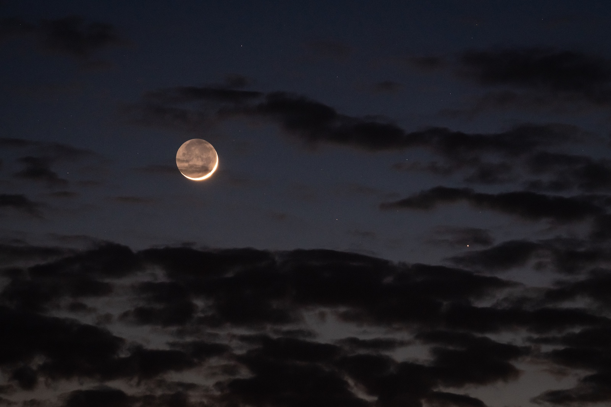

Texto eliminado
Texto tachado
Texto sub indice
Texto super indice
Texto pequeño
Texto en negrilla
Texto marcado
Texto importante
Luna
Del lat. Luna.
Escr. con may. inicial en acep. 1 en contextos astronómicos.
1. f. Único satélite natural de la Tierra, que se encuentra a 384400 km de esta, tiene un diámetro de 3476 km y realiza un giro completo alrededor de aquella cada 27,32 días.
